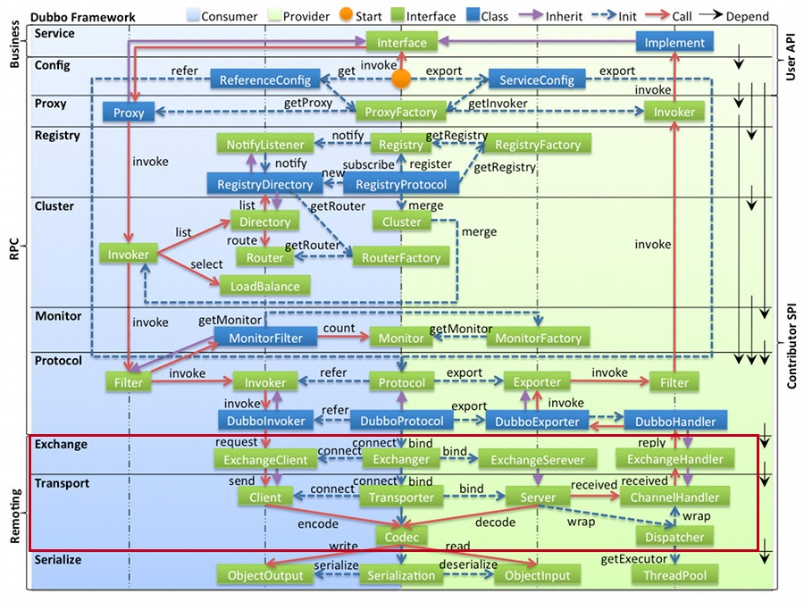
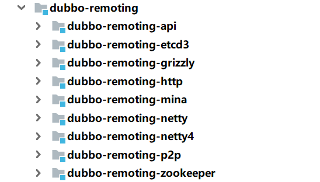
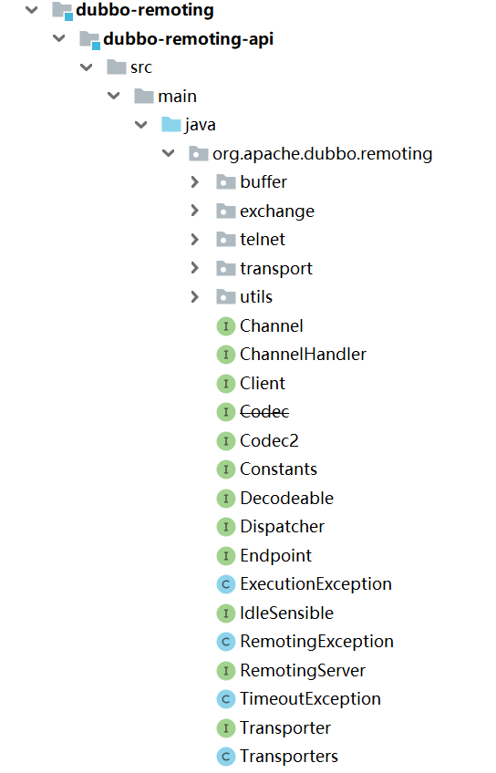
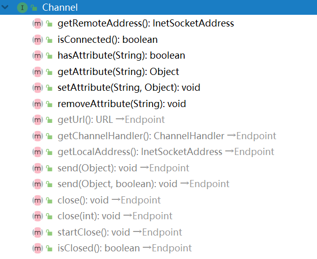
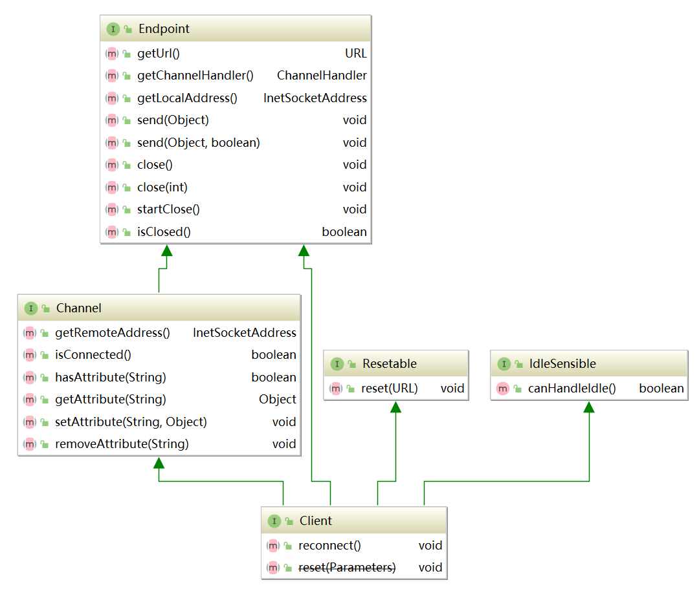
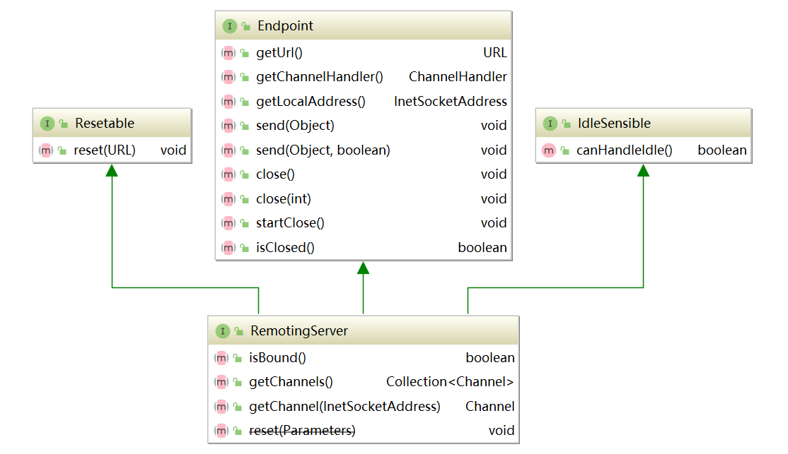
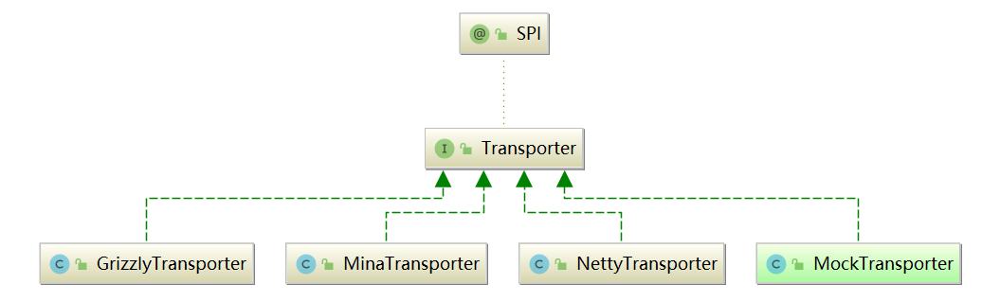
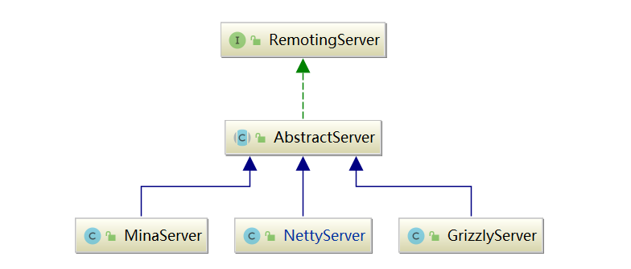
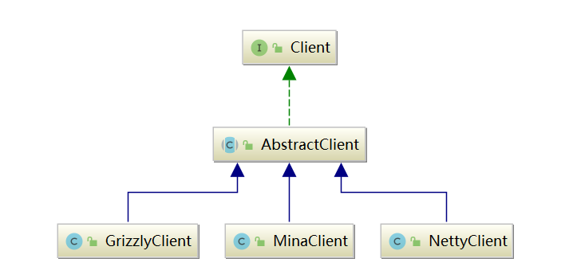

透彻理解Apache Dubbo（八）——dubbo-remoting模块：核心接口
我在前面章节介绍dubbo-registry模块的注册中心功能时，曾对ZookeeperTransporter和ZookeeperClient这两个dubbo-remoting 模块中的接口进行过分析。
dubbo-remoting 模块，提供了多种客户端/服务端通信的功能，上述的Zookeeper通信只是它提供的一个功能。在 Dubbo 的整体架构设计图中，我们可以看到最底层红色框选中的部分即为 Remoting 层，其中包括了 Exchange、Transport和 Serialize 三个子层：

Serialize子层我在上一章的序列化中已经讲解过了，本章，我主要介绍dubbo-remoting 模块的 Exchange 和 Transport 两层的核心接口与功能。
一、dubbo-remoting模块划分
Dubbo 并没有自己实现一套完整的网络通信库（比如Kafka基于Java NIO实现了自己的通信模块），而是集成了现有的第三方成熟网络库，例如Netty、Mina、Grizzly 等。Dubbo 支持用户根据自己的实际场景和需求修改配置，选择底层使用的 通信框架。
下图展示了 dubbo-remoting 模块的结构，其中每个子模块对应一个第三方通信框架，例如，dubbo-remoting-netty4 子模块就使用了 Netty4 实现 Dubbo 的网络通信，dubbo-remoting-grizzly 子模块使用 Grizzly 实现 Dubbo 的网络通信。

dubbo-remoting-zookeeper我在前面章节已经讲解过了，它的底层是基于Apache Curator与Zookeeper集群通信。
1.1 顶层抽象
上述的dubbo-remoting-api模块，是 Dubbo 对 remoting 模块的顶层抽象，里面定义了很多核心接口，其它 dubbo-remoting-* 子模块都是依赖第三方网络通信框架实现了 dubbo-remoting-api 模块中的核心接口的。dubbo-remoting-api 的模块结构见下图：

dubbo-remoting-api 模块中的各个包的功能如下：
- buffer 包：定义了缓冲区相关的接口、抽象类及实现类。buffer 包在更高的层面，抽象了各个 NIO 框架的缓冲区，同时也提供了一些基础实现；
- exchange 包：抽象了 Request 和 Response 两个概念，并为其添加很多特性。它们是远程调用非常核心的部分；
- transport 包：对网络传输层的抽象，只抽象了单向消息的传输，即请求消息由 Client 端发出，Server 端接收；响应消息由 Server 端发出，Client端接收；
- 其他接口：Endpoint、Channel、Transporter、Dispatcher 等顶层接口放到了
org.apache.dubbo.remoting包下，这些接口是 Dubbo Remoting 的核心接口。
二、核心接口
Dubbo 抽象出以下概念，它们是整个 dubbo-remoting-api 模块的基础：
- 端点（Endpoint）：我们可以通过一个 IP + PORT 唯一确定一个端点，两个端点之间可以建立 TCP 连接，双向传输数据；
- 通道（Channel）：Dubbo 将 Endpoint 之间的 TCP 连接抽象为通道；
- 客户端（Client）：发起请求的 Endpoint 称为客户端；
- 服务端（Server）：接收请求的 Endpoint 称为服务端。
2.1 Endpoint
Endpoint 代表一个端点，Dubbo中 Endpoint 接口的定义如下：
public interface Endpoint {
/**
* 获取关联的URL信息
*/
URL getUrl();
/**
* 获取底层 Channel 关联的 ChannelHandler
*/
ChannelHandler getChannelHandler();
/**
* 获取 Endpoint 的本地地址
*/
InetSocketAddress getLocalAddress();
/**
* 发送数据
*/
void send(Object message) throws RemotingException;
/**
* 发送数据
*/
void send(Object message, boolean sent) throws RemotingException;
/**
* 关闭底层的 Channel
*/
void close();
/**
* 关闭底层的 Channel
*/
void close(int timeout);
void startClose();
/**
* 判断底层的 Channel 是否已经关闭
*/
boolean isClosed();
}
2.2 Channel
Channel 是对两个 Endpoint 连接的抽象，消息发送端会往 Channel 写入消息，而接收端会从 Channel 读取消息。从Channel 接口的定义可以看出两点：
- Channel 接口继承了 Endpoint 接口，也具备开/关状态以及发送数据的能力；
- Channel 上附加 KV 属性。

2.3 ChannelHandler
ChannelHandler 是注册在 Channel 上的处理器，Netty 中也有类似的抽象。ChannelHandler 中可以处理 Channel 的连接建立/断开事件，还可以处理读取到的数据、发送的数据以及捕获到的异常。
下面是 ChannelHandler 接口的定义，从接口方法命名可以看出，都是动词的过去式，是对各类已发生事件的处理：
@SPI
public interface ChannelHandler {
void connected(Channel channel) throws RemotingException;
void disconnected(Channel channel) throws RemotingException;
void sent(Channel channel, Object message) throws RemotingException;
void received(Channel channel, Object message) throws RemotingException;
void caught(Channel channel, Throwable exception) throws RemotingException;
}
ChannelHandler 接口被 @SPI 注解修饰，表示该接口是一个扩展点。
2.4 Codec2
Netty 中有一类特殊的 ChannelHandler 专门负责实现编/解码功能，在dubbo-remoting-api 中也有相似的抽象：
@SPI
public interface Codec2 {
@Adaptive({Constants.CODEC_KEY})
void encode(Channel channel, ChannelBuffer buffer, Object message) throws IOException;
@Adaptive({Constants.CODEC_KEY})
Object decode(Channel channel, ChannelBuffer buffer) throws IOException;
// 处理TCP传输的粘包和拆包使用
enum DecodeResult {
NEED_MORE_INPUT, SKIP_SOME_INPUT
}
}
Codec2 是对整个请求和响应的编解码。Codec2 接口被 @SPI 接口修饰了，表示该接口是一个扩展接口。同时，其 encode() 方法和 decode() 方法都被 @Adaptive 注解修饰，也就会生成适配器类，根据 URL 中的 codec 值确定具体的扩展实现类。
2.5 Client
Client 代表一个客户端（本身也代表了一个 Endpoint），继承了Endpoint、 Channel、IdleSensible 等接口，说明它具备读写数据的能力：

2.6 RemotingServer
Client 代表一个服务端（本身也代表了一个 Endpoint），继承了 Endpoin、IdleSensible 等接口，说明它具备读写数据的能力：

Server 可以接收多个 Client 发起的 Channel 连接，所以 RemotingServer 接口中定义了查询 Channel 的相关方法。
2.7 Transporter
Dubbo 在 Client 和 Server 之上又封装了一层Transporter 接口，其具体定义如下：
@SPI("netty")
public interface Transporter {
/**
* Bind a server.
*
* @param url server url
* @param handler
* @return server
* @throws RemotingException
* @see org.apache.dubbo.remoting.Transporters#bind(URL, ChannelHandler...)
*/
@Adaptive({Constants.SERVER_KEY, Constants.TRANSPORTER_KEY})
RemotingServer bind(URL url, ChannelHandler handler) throws RemotingException;
/**
* Connect to a server.
*
* @param url server url
* @param handler
* @return client
* @throws RemotingException
* @see org.apache.dubbo.remoting.Transporters#connect(URL, ChannelHandler...)
*/
@Adaptive({Constants.CLIENT_KEY, Constants.TRANSPORTER_KEY})
Client connect(URL url, ChannelHandler handler) throws RemotingException;
}
Transporter 接口上有 @SPI 注解，它是一个扩展接口，默认使用“netty”这个扩展名。bind方法上具有@Adaptive 注解，表示会动态生成适配器类，并根据URL中的注解值确定 RemotingServer 的扩展实现类，connect方法同理。
Dubbo针对每一种支持的网络通信框架，都有一个对应的 Transporter 接口实现，具体定义在各个 dubbo-remoting-* 实现模块中：

对于RemotingServer和Client，也有对应的实现：


Netty、Mina、Grizzly 这些通信框架的对外接口和使用方式都不一样，如果在上层直接依赖 Netty 或 Grizzly，就依赖了具体的 NIO 库实现，而不是依赖一个有传输能力的抽象，后续要切换实现的话，就需要修改依赖和接入的相关代码，非常容易改出 Bug。这也不符合设计模式中的开放-封闭原则。
有了 Transporter 层之后，我们可以通过 Dubbo SPI 修改使用的具体 Transporter 扩展实现，从而切换到不同的 Client 和 RemotingServer 实现，达到切换底层通信框架的目的，而且无须修改任何代码。后续引入引入新的通信框架时，也只需要开发相应的 dubbo-remoting-* 实现模块，并提供 Transporter、Client、RemotingServer 等核心接口的实现即可。
2.8 Transporters
Transporters是一个门面类，封装了 Transporter 对象的创建（通过 Dubbo SPI）以及 ChannelHandler 的处理，如下所示：
public class Transporters {
private Transporters() {
}
public static RemotingServer bind(URL url, ChannelHandler... handlers) throws RemotingException {
//...
// 将多个 ChannelHandler 封装成一个 ChannelHandlerDispatcher 对象
ChannelHandler handler;
if (handlers.length == 1) {
handler = handlers[0];
} else {
handler = new ChannelHandlerDispatcher(handlers);
}
return getTransporter().bind(url, handler);
}
public static Client connect(URL url, ChannelHandler... handlers) throws RemotingException {
//...
ChannelHandler handler;
if (handlers == null || handlers.length == 0) {
handler = new ChannelHandlerAdapter();
} else if (handlers.length == 1) {
handler = handlers[0];
} else {
handler = new ChannelHandlerDispatcher(handlers);
}
return getTransporter().connect(url, handler);
}
public static Transporter getTransporter() {
// 自动生成Transporter适配器并加载
return ExtensionLoader.getExtensionLoader(Transporter.class).getAdaptiveExtension();
}
}
Transporter在创建 Client 和 RemotingServer 时，可以指定多个 ChannelHandler ，将它们绑定到 Channel ，这样就可以链式处理其中传输的数据。

ChannelHandlerDispatcher 是 ChannelHandler 接口的实现类，它内部通过一个 CopyOnWriteArraySet 维护了所有的 ChannelHandler 接口实现。
三、总结
本章，我对dubbo-remoting模块的整体功能以及模块划分进行了分析，并重点介绍了 dubbo-remoting-api 子模块中的各个包的核心功能，并对顶层org.apache.dubbo.remoting包中的核心接口——Endpoint、Channel、Client、Transporter等进行了深入分析。